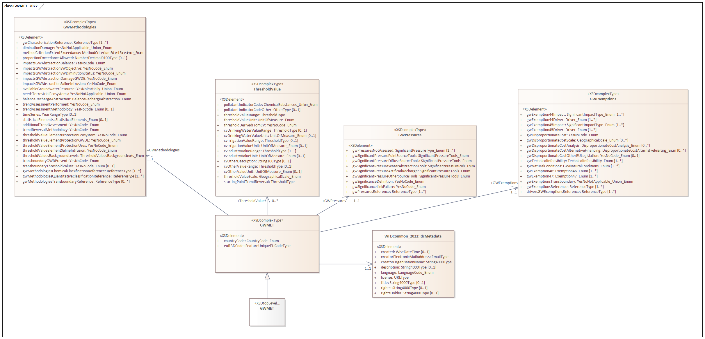

Groundwater methodologies#
Warning
Updated: 2026-07-23
Removed the Documents section: the groundwater methodologies are integrated into the groundwater dataflow.
Updated: 2026-07-06
Changes based on feedback from WG DIS and WG Groundwater members.
Removal of the GWType related classes.
Correction of the GWThresholdValue description.
Purpose and overview#
This section:
revises the information related to Groundwater methodologies in the 2nd and 3rd cycle of reporting of the Water Framework Directive River Basin Management Plans
presents a simplified proposal for the electronic reporting in the 4th cycle as a separate dataset within the Groundwater dataflow, to allow the cross-check between the methodologies data and the data reported at water body level
GWMET_2022 schema - 3rd cycle#
The GWMET_2022 schema defined the required data about about the groundwater methodologies (Figure 48).
{kind=link}

Figure 48 GWMET_2022 Schema - 3rd cycle#
The GWMET_2022 schema was already partially revised (see Current structure - 3rd cycle). Specifically, the GWExemptions data (Figure 92) is no longer requested in the 4th cycle.
Figure 49 shows a simplified diagram to help focus the discussion on the remaining issues.
---
config:
class:
hideEmptyMembersBox: true
layout: dagre
theme: default
---
classDiagram
class GWMethodologies {
+ gwCharacterisationReference: ReferenceType [1..*]
+ diminutionDamage: YesNoNotApplicable_Union_Enum
+ methodCriterionExtentExceedance: MethodCriterionExtentExceedance_Enum
+ proportionExceedanceAllowed: NumberDecimal0100Type [0..1]
+ impactsGWAbstractionBalance: YesNoCode_Enum
+ impactsGWAbstractionSWObjective: YesNoCode_Enum
+ impactsGWAbstractionSWDiminutionStatus: YesNoCode_Enum
+ impactsGWAbstractionDamageGWDE: YesNoCode_Enum
+ impactsGWAbstractionSalineIntrusion: YesNoCode_Enum
+ availableGroundwaterResource: YesNoPartially_Union_Enum
+ needsTerritorialEcosystems: YesNoNotApplicable_Union_Enum
+ balanceRechargeAbstraction: BalanceRechargeAbstraction_Enum
+ trendAssessmentPerformed: YesNoCode_Enum
+ trendAssessmentMethodology: YesNoCode_Enum [0..1]
+ timeSeries: YearRangeType [0..1]
+ statisticalElements: StatisticalElements_Enum [0..1]
+ additionalTrendAssessment: YesNoCode_Enum
+ trendReversalMethodology: YesNoCode_Enum
+ thresholdValueElementProtectionEcosystem: YesNoCode_Enum
+ thresholdValueElementProtectionGWDE: YesNoCode_Enum
+ thresholdValueElementProtectionUses: YesNoCode_Enum
+ thresholdValueElementSalineIntrusion: YesNoCode_Enum
+ thresholdValueBackgroundLevels: ThresholdValueBackgroundLevels_Enum
+ transboundaryGWBPresent: YesNoCode_Enum
+ transboundaryThresholdValues: YesNoCode_Enum
+ gwMethodologiesChemicalStatusClassificationReference: ReferenceType [1..*]
+ gwMethodologiesQuantitativeClassificationReference: ReferenceType [1..*]
+ gwMethodologiesTransboundaryReference: ReferenceType [0..*]
}
class GWPressures{
+ gwPressuresNotAssessed: SignificantPressureType_Enum [1..*]
+ gwSignificantPressurePointSourceTools: SignificantPressureTools_Enum
+ gwSignificantPressureDiffuseSourceTools: SignificantPressureTools_Enum
+ gwSignificantPressureWaterAbstractionTools: SignificantPressureTools_Enum
+ gwSignificantPressureArtificialRecharge: SignificantPressureTools_Enum
+ gwSignificantPressureOtherSourceTools: SignificantPressureTools_Enum
+ gwSignificanceDefinition: YesNoCode_Enum
+ gwSignificanceLinkFailure: YesNoCode_Enum
+ gwPressuresReference: ReferenceType [1..*]
}
class ThresholdValue{
+ pollutantIndicatorCode: ChemicalSubstances_Union_Enum
+ pollutantIndicatorCodeOther: OtherType [0..1]
+ thresholdValueRange: ThresholdType [0..1]
+ thresholdValueUnit: UnitOfMeasure_Enum
+ thresholdValueDerivedFromCV: YesNoCode_Enum
+ cvDrinkingWaterValueRange: ThresholdType [0..1]
+ cvDrinkingWaterValueUnit: UnitOfMeasure_Enum [0..1]
+ cvIrrigationValueRange: ThresholdType [0..1]
+ cvIrrigationValueUnit: UnitOfMeasure_Enum [0..1]
+ cvIndustryValueRange: ThresholdType [0..1]
+ cvIndustryValueUnit: UnitOfMeasure_Enum [0..1]
+ cvOtherValueRange: ThresholdType [0..1]
+ cvOtherValueUnit: UnitOfMeasure_Enum [0..1]
+ thresholdValueScale: GeographicalScale_Enum
+ startingPointTrendReversal: ThresholdType
}
class GWMET {
+ countryCode: CountryCode_Enum
+ euRBDCode: FeatureUniqueEUCodeType
}
GWMethodologies <-- GWMET : 1..1
GWPressures <-- GWMET : 1..1
ThresholdValue <-- GWMET : *..0
Figure 49 Class diagram for the GWMET_2022 schema in the 3rd cycle.#
The Commission has revised and simplified the GWMethodologies class, keeping only a subset of the elements requested in the 3rd cycle. The following elements were removed:
GWMET/GWMethodologies/diminutionDamage
GWMET/GWMethodologies/methodCriterionExtentExceedance
GWMET/GWMethodologies/proportionExceedanceAllowed
GWMET/GWMethodologies/impactsGWAbstractionBalance
GWMET/GWMethodologies/impactsGWAbstractionSWObjective
GWMET/GWMethodologies/impactsGWAbstractionSWDiminutionStatus
GWMET/GWMethodologies/impactsGWAbstractionDamageGWDE
GWMET/GWMethodologies/impactsGWAbstractionSalineIntrusion
GWMET/GWMethodologies/availableGroundwaterResource
GWMET/GWMethodologies/needsTerritorialEcosystems
GWMET/GWMethodologies/balanceRechargeAbstraction
GWMET/GWMethodologies/gwMethodologiesChemicalStatusClassificationReference
GWMET/GWMethodologies/gwMethodologiesQuantitativeClassificationReference
GWMET/GWMethodologies/gwMethodologiesTransboundaryReference
GWMET/GWMethodologies/transboundaryGWBPresent
GWMET/GWMethodologies/trendAssessmentMethodology
The following elements were moved or revised:
GWMET/GWMethodologies/trendAssessmentStatisticalElements
GWMET/GWMethodologies/thresholdValueBackgroundLevels
The Commission has revised and simplified the ThresholdValue class, keeping only a subset of the elements requested in the 3rd cycle. The following elements were removed:
GWMET/ThresholdValue/pollutantIndicatorCodeOther
GWMET/ThresholdValue/thresholdValueDerivedFromCV
GWMET/ThresholdValue/cvDrinkingWaterValueRange
GWMET/ThresholdValue/cvDrinkingWaterValueUnit
GWMET/ThresholdValue/cvIrrigationValueRange
GWMET/ThresholdValue/cvIrrigationValueUnit
GWMET/ThresholdValue/cvIndustryValueRange
GWMET/ThresholdValue/cvIndustryValueUnit
GWMET/ThresholdValue/cvOtherValueRange
GWMET/ThresholdValue/cvOtherValueUnit
GWMET/ThresholdValue/thresholdValueScale
The Commission has revised GWPressures class. The following elements were removed:
GWMET/GWPressures/gwSignificantPressureOtherSourceTools
GWMET/GWPressures/gwPressuresNotAssessed
GWMET/GWPressures/gwPressuresReference
The structure of the GWPressures class was also revised.
Methodologies dataset - 4th cycle#
This section shows the proposed structure for the groundwater methodologies reporting.
GWMethodologies table#
The GWMethodologies table has a structure similar to the corresponding class
in the 3rd cycle reporting, minus the attributes removed by the Commission’s review
(see Figure 50).
---
config:
class:
hideEmptyMembersBox: true
layout: dagre
theme: neutral
themeVariables:
noteBkgColor: LightYellow
noteTextColor: black
---
classDiagram
class GWMethodologies {
+ euRBDCode: wiseIdentifier
+ gwCharacterisationReference: referenceCode
+ trendAssessmentPerformed: YesNo
+ trendAssessmentTimeSeries: range [0..1]
+ trendAssessmentStatisticalMethod: TrendStatisticalMethod [0..1]
+ additionalTrendAssessment: YesNo
+ trendReversalMethodology: YesNo
+ thresholdValueElementProtectionEcosystem: YesNo
+ transboundaryThresholdValues: YesNoNotApplicable
+ thresholdValueElementProtectionGWDE: YesNo
+ thresholdValueElementProtectionUses: YesNo
+ thresholdValueElementSalineIntrusion: YesNo
}
class TrendStatisticalMethod{
<<enumeration>>
statisticalSignificanceTrendDetection
confidenceIntervalTrendMagnitude
none
}
GWMethodologies .. TrendStatisticalMethod
classDef default fill:white,stroke:#000;
classDef otherDataset fill:lightyellow,stroke:#000;
classDef forFixing fill:white,stroke:#f00;
Figure 50 Groundwater methodologies - GWMethodologies table - 4th cycle#
GWPressureAssessment table#
The GWPressureAssessment table has a modified structure
(see Figure 51):
the reporting of “pressures not assessed” is eliminated, because the data was difficult to analyse and contained inconsistencies
instead, for each pressure (or group of pressures), three attributes are requested (
gwPressureAssessmentMethod,gwSignificanceDefinition,gwSignificanceLinkFailure)given that the pressure codelist is hierarchical, the granularity of the reporting is selected by Member States
the quality control procedure will verify that different levels are not selected simultaneously for any given RBD
For more information see PressureType codelist - 4th cycle.
---
config:
class:
hideEmptyMembersBox: true
layout: dagre
theme: neutral
themeVariables:
noteBkgColor: LightYellow
noteTextColor: black
---
classDiagram
class GWPressureAssessment{
+ euRBDCode: wiseIdentifier
+ gwPressure: PressureType
+ gwPressureAssessmentMethod: PressureAssessmentMethod
+ gwSignificanceDefinition: YesNoNotApplicable
+ gwSignificanceLinkFailure: YesNoNotApplicable
}
class PressureAssessmentMethod{
<<enumeration>>
numericalTools
expertJudgement
combinationOfBoth
notAssessed
}
GWPressureAssessment ..> PressureAssessmentMethod
classDef default fill:white,stroke:#000;
classDef otherDataset fill:lightyellow,stroke:#000;
classDef forFixing fill:white,stroke:#f00;
Figure 51 Groundwater methodologies - GWPressureAssessment table - 4th cycle#
GWThresholdValue table#
The GWThresholdValue table has a structure similar to the corresponding class
in the 3rd cycle reporting, minus the attributes removed by the Commission’s review
(see Figure 52).
Note that:
a unique
gwThresholdIdentifierwas introduced to avoid ambiguityduplicate records will be detected (i.e. records with identical values for all attributes, except the identifier)
---
config:
class:
hideEmptyMembersBox: true
layout: dagre
theme: neutral
themeVariables:
noteBkgColor: LightYellow
noteTextColor: black
---
classDiagram
class GWThresholdValue{
+ gwThresholdIdentifier: wiseIdentifier
+ parameterCode: Parameter
+ thresholdValueRange: range
+ thresholdValueUnit: UnitOfMeasure
+ startingPointTrendReversal: range [0..1]
«reference»
+ gwThresholdReference: referenceCode [0..n]
}
class GWPollutant ["GroundWaterDataset::GWPollutant"]:::otherDataset{
+ euGroundWaterBodyCode
+ gwPollutantCode
+ gwThresholdIdentifier
}
GWThresholdValue <.. GWPollutant: gwThresholdIdentifier
classDef default fill:white,stroke:#000;
classDef otherDataset fill:lavender,stroke:#000;
classDef forFixing fill:white,stroke:#f00;
Figure 52 Groundwater methodologies - GWThresholdValue table - 4th cycle#
Codelists - 4th cycle#
For the
PressureAssessmentMethodcodelist, see Table 58.For the
TrendStatisticalMethodcodelist, see Table 43.
TrendStatisticalMethod codelist
Notation |
Label |
Definition |
|---|---|---|
statisticalSignificanceTrendDetection |
Statistical significance |
The existence of a significant trend was assessed using statistical tests. |
confidenceIntervalTrendMagnitude |
Confidence interval |
The existence of a significant trend was assessed using statistical tests, the magnitude of the trend was quantified and the uncertainty was assessed using confidence intervals. |
none |
None |
The trend assessment did not use statistical methods (i.e. expert judgement only) |
Annexes - Data analysis - 3rd cycle#
trendAssessmentMethodology#
The WFD2022 guidance document definitions for the trendAssessmentPerformed, trendAssessmentMethodology and statisticalElements elements of the GWMethodologies class are transcribed in Table 44.
Attribute |
Guidance |
Option |
|---|---|---|
trendAssessmentPerformed |
Required. |
‘Yes’ |
trendAssessmentMethodology |
Conditional. |
‘Yes’ |
statisticalElements |
Conditional. |
‘Statistical significance’ |
The reported data for combinations of the three elements is presented in Table 45.
The first four records may be interpreted as:
in 95 river basin districts, trends were assessed and a test for statistical significance of an upward trend was used
(e.g. using a linear regression t-test or a non-parametric Mann-Kendall test)in 36 river basin districts, trends were not assessed
in 16 river basin districts, trends were assessed and the magnitude of significant upward trends was quantified using confidence intervals
in 2 river basin districts, trends were assessed but no methodology for detecting significant upward trends exists, and no statistical element was used (i.e. only expert judgement was used?)
The last two records are difficult to interpret, and possibly result from reporting mistakes:
in 6 river basin districts trends were assessed, a methodology for detecting significant upward trends was applied, but somehow no statistical element was used
in 1 river basin districts trends were assessed, a methodology for detecting significant upward trends was not applied, but somehow statistical significance was determined
In conclusion:
the trendAssessmentMethodology element appears to be redundant with respect to the statisticalElements element, and may be removed to simplify the reporting and avoid mistakes
the meaning of the statisticalElements element should be made clearer to both data provider and end-users, to facilitate the interpretation
trendAssessmentPerformed |
trendAssessmentMethodology |
statisticalElements |
numberOfRBDs |
numberOfCountries |
|---|---|---|---|---|
Yes |
Yes |
Statistical significance |
95 |
20 |
No |
«null» |
«null» |
36 |
5 |
Yes |
Yes |
Confidence intervals |
16 |
6 |
Yes |
No |
None |
2 |
1 |
Yes |
Yes |
None |
6 |
2 |
Yes |
No |
Statistical significance |
1 |
1 |